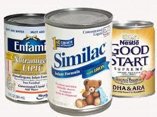

Childrens Dentistry in Evansville, Indiana • East Office (812) 479 - 8609 • West Office (812) 401-6095


The proper amount of fluoride from infancy through old age helps prevent and control tooth decay. In a minority of children, fluoride exposure during the ages when teeth are forming (from birth through age 8) also can result in a range of changes within the outer surface of the tooth called enamel fluorosis. Recent evidence suggests that mixing powdered or liquid infant formula concentrate with fluoridated water on a regular basis may increase the chance of a child developing the faint white markings of very mild or mild enamel fluorosis.
This occurs on baby and permanent teeth while they are forming under the gums. Once the teeth come into the mouth, they are no longer able to develop this condition. Typically, very mild or mild fluorosis is barely noticeable, if noticed at all. Studies have not shown that teeth are likely to develop more esthetically noticeable forms of fluorosis, even with regular mixing of formula with fluoridated water.
In children younger than 8 years of age, combined fluoride exposure from all sources—water, food, toothpaste, mouth rinse, or other products—contributes to enamel fluorosis. Currently one-third (33%) of children aged 12 to 15 years in the United States have very mild to mild forms of this condition. It is important to understand that some fluoride exposure to developing teeth also plays a long-term role in preventing tooth decay. Parents and health providers should weigh the balance between a child’s risk for very mild or mild enamel fluorosis and the benefit of fluoride for preventing tooth decay and the need for dental fillings.
The possibility of an association between fluoride in infant formula and the risk for enamel fluorosis has been studied for many years. A recent study, however, has raised the possibility that fluoride exposure during the first year of life may play a more important role on fluorosis development than was previously understood. It now appears that the amount of the fluoride contained in the water used for mixing infant formula may influence a child’s risk for developing enamel fluorosis, particularly if the child’s sole source of nutrition is from reconstituted infant formula.
Parents and caregivers of infants fed primarily with formula from concentrate who are concerned about the effect that mixing their infant’s formula with fluoridated water may have in developing enamel fluorosis can lessen this exposure by mixing formula with low fluoride water most or all of the time. This may be tap water, if the public water system is not fluoridated. If tap water is fluoridated or has substantial natural fluoride (0.7 mg/L or higher), a parent may consider using a low-fluoride alternative water source. Bottled water known to be low in fluoride is labeled as purified, deionized, demineralized, distilled, or prepared by reverse osmosis.
Ready-to-feed formula contains little fluoride and does not contribute to enamel fluorosis. Those types of formula that require mixing with water—powdered or liquid concentrates—can be the child’s main source of fluoride intake (depending upon the water source) and may contribute to this condition.